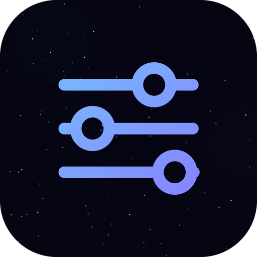
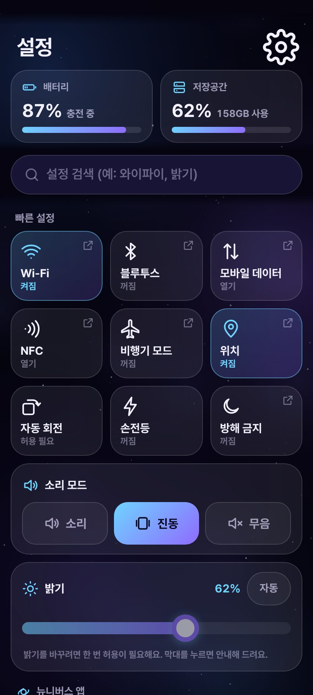
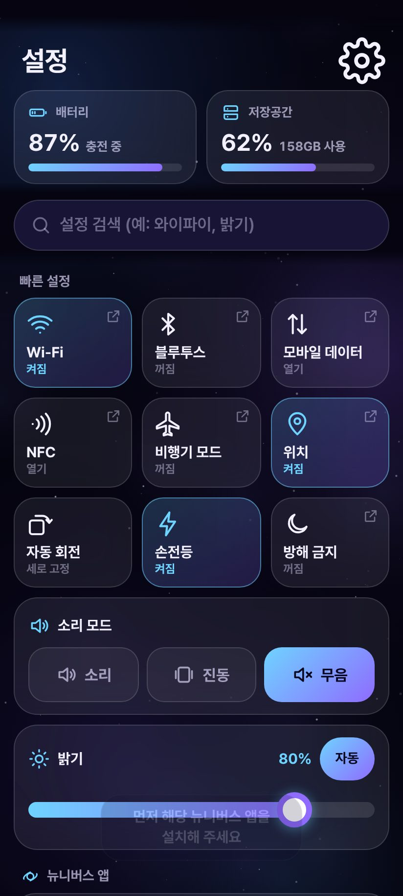
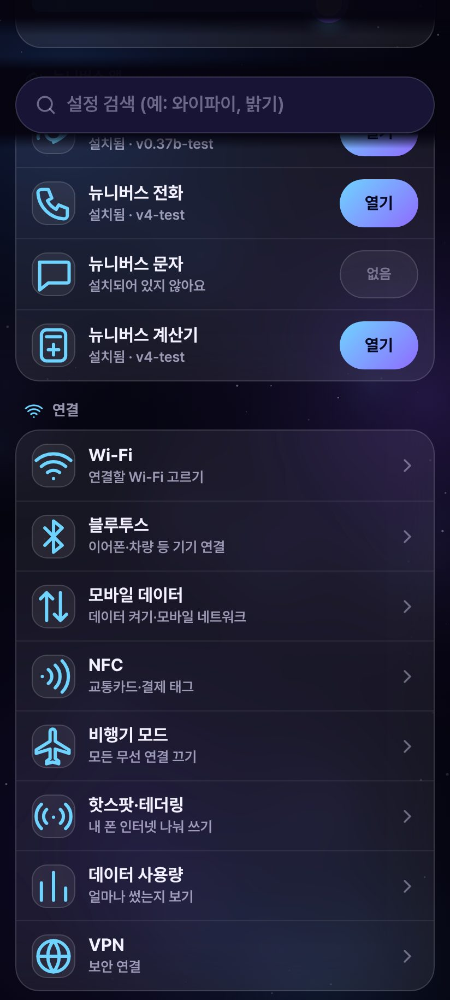
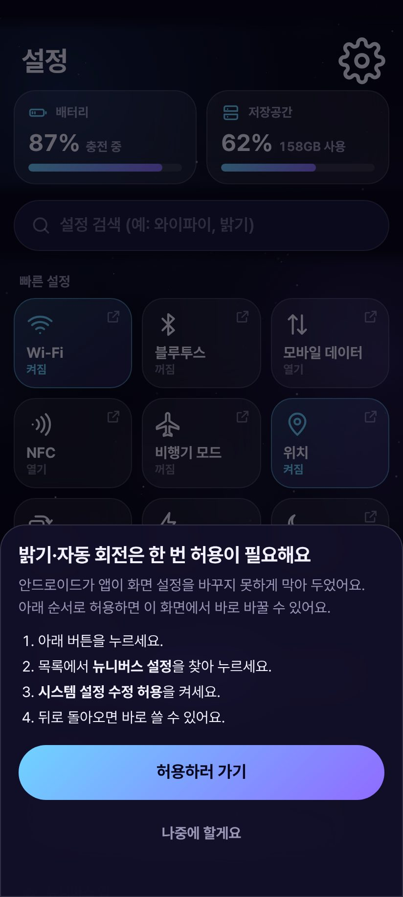
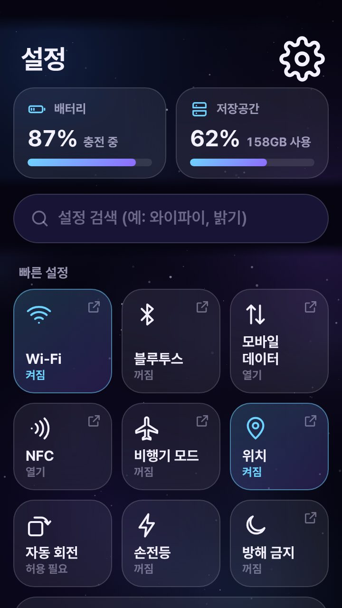
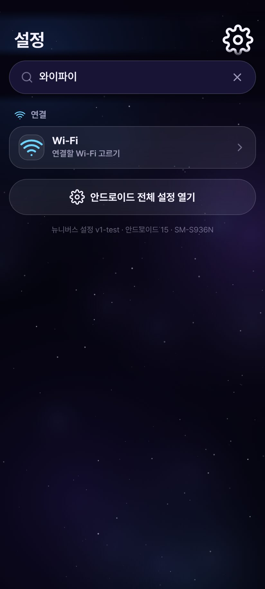

뉴니버스 설정 v1 (시험판)
버전 1-test · 뉴니버스 고정 서명(런처·전화·문자·계산기와 같은 서명) · 인터넷 권한 없음
내려받기 · 뉴니버스 설정 v1 (약 0.08MB)
이런 앱이에요
- 검색 상자에 "와이파이", "밝기"처럼 치면 설정 항목만 골라 보여 줘요.
- 빠른 설정 타일: Wi-Fi · 블루투스 · 모바일 데이터 · NFC · 비행기 모드 · 위치 · 자동 회전 · 손전등 · 방해 금지. 그 아래에 소리 모드(소리·진동·무음)와 밝기 막대가 있어요.
- 맨 위 카드에 배터리 %와 저장공간 사용량이 보여요.
- 목록은 연결 · 소리·진동 · 디스플레이 · 배경화면·테마 · 알림 · 배터리 · 저장공간 · 앱 · 기본 앱 · 보안·개인정보 · 접근성 · 휴대전화 정보. 누르면 해당 안드로이드 설정 화면이 열려요.
- 기본 앱 설정에서 뉴니버스 런처·전화·문자를 기본 앱으로 정할 수 있어요.
- 뉴니버스 앱 칸에서 설치된 뉴니버스 앱(런처·전화·문자·계산기)을 확인하고 바로 열 수 있어요.
바로 바뀌는 것 vs 안드로이드 창이 열리는 것
이 앱에서 바로 바뀜
- 소리 · 진동 모드 (허용 없이)
- 손전등 (폰에 플래시가 있을 때)
- 밝기 · 자동 밝기 · 자동 회전 (아래 첫 허용 1번 후)
- 무음 (아래 첫 허용 2번 후)
안드로이드 창이나 설정 화면이 열림 (안드로이드 10 이후로는 앱이 직접 켜고 끌 수 없어요)
- Wi-Fi · 모바일 데이터 · NFC: 작은 설정 창이 아래에서 올라와요
- 블루투스 · 비행기 모드 · 위치 · 핫스팟 · 방해 금지: 해당 설정 화면이 열려요
- 켜짐/꺼짐 표시는 Wi-Fi · 블루투스 · 비행기 모드 · 위치 · 방해 금지만 보여요
처음 한 번 허용이 필요한 것
- 시스템 설정 수정 허용 — 밝기와 자동 회전을 바꾸려면 필요해요. 처음 누르면 앱이 안내 창을 띄워요: 허용하러 가기 → 목록에서 뉴니버스 설정 → 허용을 켜고 뒤로.
- 방해 금지 접근 허용 — 무음을 쓸 때만 필요해요. 같은 방식으로 안내 창이 떠요.
일반 권한 창(위치·카메라 등)은 뜨지 않아요. 허용하지 않아도 나머지 기능은 다 쓸 수 있어요.
1. 설치하기
- 이 폰의 크롬에서 위 내려받기 → 내 파일 › 다운로드 › newniverse-settings-v1-test.apk → (출처 허용) → 설치.
- 앱 목록에서 뉴니버스 설정을 열어 쓰세요.
시험판이라 일부 설정 창은 삼성 원UI에서 모양이 다를 수 있어요. 열리지 않는 항목은 자동으로 안드로이드 전체 설정으로 넘어가요.
화면






화면의 수치는 예시예요.